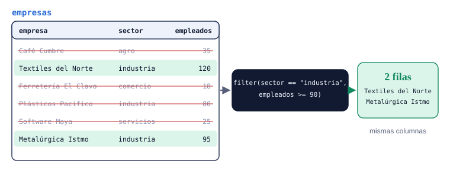
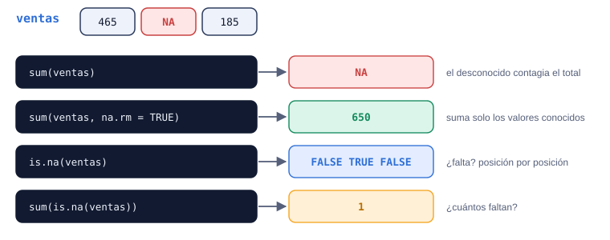

Semana 4 · Unidad 4 · Transformar datos para responder preguntas
Tengo una base. ¿Cómo obtengo la información que necesito?
Una base original casi nunca responde la pregunta tal como llega. Esta semana aprendes a quedarte con la subpoblación correcta, a crear las variables que el análisis necesita (crecimiento, margen, salario real) y a no dejar que un valor faltante arruine un promedio.
EVALÚAPrimer Parcialsemana 6
Pregunta orientadora¿Qué filas, qué columnas y qué variables nuevas necesito para responder mi pregunta, y qué hago con los datos que faltan?
Gráfico 4.0 Textiles del Norte lidera las ventas de 2024; a Agroexport Lempa le falta el datoVentas 2024 por empresa, miles de USD
Fuente: datos/empresas.csv, ordenado de mayor a menor; NA marca el dato faltante.
Pasa el cursor, toca el gráfico o usa ← → para leer cada dato con la lupa.
Momento 1 de 4
Antes de clase
Cómo usar esta guía
Hasta ahora recortabas tablas con corchetes y $. Esta semana llega dplyr: verbos con nombre (select, filter, arrange, mutate) que se encadenan con el pipe |> y convierten una base original en la base que tu pregunta necesita. También aprendes a tratar los valores faltantes, NA, antes de que arruinen un promedio.
Antes de claseLee R4DS cap. 3 (secciones 3.1 a 3.4) y la parte de valores faltantes del cap. 12; responde el control de lectura.
Con RStudio abiertoDescarga empresas.csv a tu carpeta datos/. En la página ya está cargado; la primera ejecución instala dplyr.
Con | basta con cumplir una condición. Con & (o coma) habría que cumplir ambas.
Momento 2 de 4
Aprender
dplyr: verbos para transformar tablas
En palabras simples
dplyr es la caja de herramientas del analista de planilla: una herramienta para elegir columnas, otra para quedarte con ciertas filas, otra para ordenar y otra para calcular columnas nuevas. Cada una hace una sola cosa, y las usas en cadena, como una línea de ensamblaje.
Los ejemplos usan empresas.csv: 12 empresas salvadoreñas (datos simulados) con sector, departamento, empleados, ventas de 2023 y 2024 y costos de 2024, en miles de dólares. Tiene algunos valores faltantes a propósito. Este bloque la prepara; los demás lo ejecutan antes, solos:
# A tibble: 12 × 7
empresa sector departamento empleados ventas_2023 ventas_2024 costos_2024
<chr> <chr> <chr> <dbl> <dbl> <dbl> <dbl>
1 Café Cumbre agro Santa Ana 35 420 465 380
2 Textiles d… indus… San Salvador 120 1850 1720 1610
3 Ferretería… comer… San Miguel 18 610 690 540
4 Agroexport… agro Usulután 60 980 NA 870
5 Software M… servi… La Libertad 25 300 410 260
6 Panadería … comer… Sonsonate 9 95 104 88
7 Plásticos … indus… La Libertad 80 1240 1310 1150
8 Turismo Vo… servi… Santa Ana 14 150 185 NA
9 Lácteos La… agro San Miguel NA 540 560 500
10 Imprenta C… servi… San Salvador 22 210 198 205
11 Distribuid… comer… San Miguel 40 1320 1450 1290
12 Metalúrgic… indus… Sonsonate 95 1600 1540 1580
Verbo
Trabaja sobre
Qué hace
select()
columnas
elige (o excluye con -) columnas
rename()
columnas
cambia nombres sin quitar columnas
mutate()
columnas
crea o modifica columnas a partir de otras
filter()
filas
conserva las filas que cumplen una condición
arrange()
filas
ordena filas (ascendente; desc() para descendente)
El pipe |>
En palabras simples
El pipe se lee “y luego”: toma las empresas, y luego quédate con las del agro, y luego ordénalas por ventas. Es la receta escrita en el orden en que se cocina.
x |> f(y) equivale a f(x, y): lo de la izquierda entra como primer argumento. Como todos los verbos reciben la tabla primero, el pipe los encadena de arriba hacia abajo. En RStudio, Ctrl/Cmd+Shift+M lo escribe (activa “Use native pipe operator” en Tools → Global Options → Code).
# Anidado: se lee de adentro hacia afuera
arrange(select(empresas, empresa, ventas_2024), desc(ventas_2024))
# Con pipe: se lee en el orden en que ocurre
empresas |>
select(empresa, ventas_2024) |>
arrange(desc(ventas_2024))
Las dos formas dan la misma tabla. Ejecuta el bloque y compruébalo.
Filtrar subpoblaciones con filter()
En palabras simples
Filtrar es armar la lista de invitados a una reunión de gremio: “empresas del agro” (una condición), “del agro y con más de 50 empleados” (las dos), “del agro o de San Miguel” (cualquiera de las dos), “todas menos las de servicios” (negación).
Operador
Significado
Ejemplo con empresas
==, !=
igual, distinto
sector == "agro", sector != "servicios"
> < >= <=
comparación numérica
empleados >= 50
& (o coma)
Y: ambas a la vez
sector == "agro" & empleados >= 50
|
O: al menos una
sector == "agro" | departamento == "San Miguel"
!
NO: niega
!(sector %in% c("agro", "servicios"))
%in%
pertenece a una lista
departamento %in% c("Santa Ana", "Sonsonate")

filter() decide fila por fila: pasa si la condición es TRUE. Las columnas quedan intactas.
Caso: las grandes del oriente y el occidente
Pregunta
Una cámara empresarial quiere invitar a las empresas de San Miguel o Sonsonate que tengan al menos 30 empleados. ¿Quiénes son?
Exploración
Dos condiciones que deben cumplirse a la vez (departamento y tamaño): &. La primera es “uno de dos departamentos”: %in%. Ojo: Lácteos La Vega (San Miguel) no tiene dato de empleados.
# A tibble: 2 × 3
empresa departamento empleados
<chr> <chr> <dbl>
1 Distribuidora Oriente San Miguel 40
2 Metalúrgica Istmo Sonsonate 95
Interpretación
Dos empresas cumplen. Lácteos La Vega no aparece: como su número de empleados es desconocido, la condición empleados >= 30 es NA y filter() solo deja pasar TRUE. No es que sea pequeña: es que no sabemos.
Verificación: ¿cómo sé que es correcto?
Cuenta a mano las empresas de esos dos departamentos (5) y revisa por qué quedó fuera cada una.
Pregunta explícitamente por los faltantes: filter(is.na(empleados)). Si una empresa importante tiene NA, se reporta, no se esconde.
Crear variables con mutate()
En palabras simples
mutate() es agregar una columna calculada a la hoja de cálculo: “margen = (ventas − costos) / ventas”. La diferencia con la hoja: la fórmula se aplica a todas las filas a la vez y queda escrita en el script, así cualquiera puede revisarla.
Caso: ¿quién creció y quién gana dinero?
Pregunta
¿Cuánto crecieron las ventas de cada empresa entre 2023 y 2024, y qué margen de ganancia tuvo en 2024?
# A tibble: 12 × 4
empresa sector crecimiento_pct margen_pct
<chr> <chr> <dbl> <dbl>
1 Software Maya servicios 36.7 36.6
2 Turismo Volcanes servicios 23.3 NA
3 Ferretería El Clavo comercio 13.1 21.7
4 Café Cumbre agro 10.7 18.3
5 Distribuidora Oriente comercio 9.8 11
6 Panadería Doña Tere comercio 9.5 15.4
7 Plásticos Pacífico industria 5.6 12.2
8 Lácteos La Vega agro 3.7 10.7
9 Metalúrgica Istmo industria -3.8 -2.6
10 Imprenta Central servicios -5.7 -3.5
11 Textiles del Norte industria -7 6.4
12 Agroexport Lempa agro NA NA
Interpretación
Software Maya crece más rápido y tiene el mejor margen. Tres empresas vendieron menos que en 2023 y dos operan con margen negativo (Imprenta Central y Metalúrgica Istmo: sus costos superan sus ventas). Agroexport Lempa queda al final con NA: sin ventas de 2024 no hay crecimiento ni margen; arrange() siempre deja los NA al final.
Verificación: ¿cómo sé que es correcto?
A mano, Software Maya: (410 − 300) / 300 × 100 = 36.7 %.
Un margen negativo debe corresponder a costos mayores que ventas: revísalo en la tabla original.
Cuenta los NA: cada uno debe tener una causa en los datos de origen.
Antes
empresa
ventas_2023
ventas_2024
Café Cumbre
420
465
Software Maya
300
410
mutate(crecimiento_pct = …)
Después: una columna más, mismas filas
empresa
ventas_2023
ventas_2024
crecimiento_pct
Café Cumbre
420
465
10.7
Software Maya
300
410
36.7
Salario real: descontar la inflación
Un clásico de economía: el salario mínimo nominal sube, pero ¿alcanza para comprar más? Se divide entre el índice de precios (IPC, base 2019 = 100):
El salario nominal se mantuvo en $365 desde 2021, pero su poder de compra cayó cada año con la inflación: en 2024 equivale a unos $314 de 2019. Las cifras son ilustrativas; en tu proyecto usa la fuente oficial (BCR, DIGESTYC) y cítala.
Valores faltantes: NA, is.na() y na.rm
En palabras simples
Un NA es una casilla del formulario que la empresa no llenó. No es cero: no sabemos el valor. Por eso, si preguntas “¿cuánto suman las ventas?” y una falta, la respuesta honesta es “no se sabe”, a menos que decidas explícitamente sumar solo las que sí reportaron.

El NA “contagia” cualquier cálculo. na.rm = TRUE lo excluye; is.na() lo encuentra.
sum(empresas$ventas_2024) # un faltante lo contagia todo
sum(empresas$ventas_2024, na.rm = TRUE) # suma de las que reportaron
sum(is.na(empresas$ventas_2024)) # ¿cuántas faltan?
mean(empresas$empleados, na.rm = TRUE)
NA > 5
NA == NA
[1] NA
[1] 8632
[1] 1
[1] 47.09091
[1] NA
[1] NA
Por qué x == NA no funciona
Si no sabes cuánto vendió una empresa, tampoco sabes si vendió lo mismo que otra desconocida: NA == NA es NA, no TRUE. Para preguntar “¿falta?” existe is.na().
Para ver qué filas tienen algún faltante y decidir qué hacer:
# A tibble: 3 × 4
empresa empleados ventas_2024 costos_2024
<chr> <dbl> <dbl> <dbl>
1 Agroexport Lempa 60 NA 870
2 Turismo Volcanes 14 185 NA
3 Lácteos La Vega NA 560 500
[1] 11
Quitar filas es una decisión, no un reflejo
Eliminar las filas con NA cambia la población que analizas. Si las que no reportan son justo las que van mal, el promedio de las demás queda inflado. Siempre reporta cuántas quitaste y por qué.
Momento 3 de 4
Practicar
Tablas de traza
Traza 1 · ¿Qué hace un NA?
Con v <- c(12, NA, 8, 20), escribe el resultado de cada expresión (varios valores separados por comas).
¿Por qué el segundo filter() no quita ninguna fila?
Las dos empresas sin costos (Turismo Volcanes) o sin ventas (Agroexport Lempa) son de servicios y agro: ya habían salido en el primer filtro. Industria y comercio tienen todos sus costos. El paso sigue siendo buena práctica: protege el cálculo si mañana llega una fila incompleta.
Ejercicios
Sin IAIA permitidaIA requerida
E1 · Predice las filas
filter · ★Sin IA
Sin ejecutar, predice cuántas filas devuelve cada línea (usa la tabla de empresas de arriba):
Agro: Café Cumbre, Agroexport Lempa, Lácteos La Vega.
Agro y ventas 2023 > 500: Agroexport (980) y Lácteos (540).
Agro o ventas 2023 > 1500: las 3 del agro más Textiles (1850) y Metalúrgica (1600).
Ni agro ni servicios: industria y comercio, 3 + 3.
E2 · El promedio que salió NA
NA · ★★Sin IA
Un compañero escribe esto para el informe y obtiene NA. Explica por qué, corrígelo y di qué debe decir el informe además del número.
mean(empresas$empleados)
Respuesta
[1] NA
Lácteos La Vega no reportó empleados: el NA contagia el promedio. Corrección: mean(empresas$empleados, na.rm = TRUE), que da 47.1. El informe debe decir que el promedio se calculó con 11 de 12 empresas porque una no reportó.
E3 · Construye: productividad por empleado
mutate · ★★IA permitida
Crea una columna ventas_por_empleado (ventas 2024 en miles entre empleados, redondeada a 1 decimal), quédate con las empresas que tienen ese dato, ordénalas de mayor a menor y muestra solo empresa, sector y la nueva columna. ¿Qué sector aparece arriba y por qué podría ser?
# A tibble: 10 × 3
empresa sector ventas_por_empleado
<chr> <chr> <dbl>
1 Ferretería El Clavo comercio 38.3
2 Distribuidora Oriente comercio 36.2
3 Software Maya servicios 16.4
4 Plásticos Pacífico industria 16.4
5 Metalúrgica Istmo industria 16.2
6 Textiles del Norte industria 14.3
7 Café Cumbre agro 13.3
8 Turismo Volcanes servicios 13.2
9 Panadería Doña Tere comercio 11.6
10 Imprenta Central servicios 9
Criterios: el filter(!is.na()) va después del mutate() (quita tanto a quien no tiene empleados como a quien no tiene ventas); la interpretación nota que el comercio mayorista vende mucho por empleado porque revende, no porque sea más “eficiente”: el indicador depende del modelo de negocio.
E4 · Modifica: de variación a clasificación
mutate lógico · ★★IA permitida
Agrega a indicadores (el resultado del caso de mutate()) una columna lógica en_riesgo que sea TRUE cuando la empresa decreció o tiene margen negativo. Luego muestra solo las empresas en riesgo.
# A tibble: 3 × 5
empresa sector crecimiento_pct margen_pct en_riesgo
<chr> <chr> <dbl> <dbl> <lgl>
1 Metalúrgica Istmo industria -3.8 -2.6 TRUE
2 Imprenta Central servicios -5.7 -3.5 TRUE
3 Textiles del Norte industria -7 6.4 TRUE
Una comparación ya devuelve TRUE/FALSE: no hace falta if_else() (semana 9) para una clasificación de dos categorías. filter(en_riesgo) conserva las filas donde la columna es TRUE. Turismo Volcanes (margen NA, crecimiento positivo) queda fuera: FALSE | NA es NA.
E5 · Proyecto: la base para tu pregunta
proyecto · ★★IA permitida
Con la base de tu proyecto, escribe un pipeline que: filtre la subpoblación que te interesa, cree al menos una variable nueva con sentido económico (tasa, margen, valor real, variación) y seleccione solo las columnas necesarias. Reporta cuántas filas tenía la base, cuántas quedaron y cuántos NA hay en la variable nueva.
Criterios
Cada transformación tiene una razón ligada a una pregunta: no se usa una función solo para demostrar que se conoce.
Los conteos antes y después están anotados como comentarios.
Los NA de la variable nueva se explican y la decisión sobre ellos se justifica.
Práctica intensiva
Ejercicios rápidos · ¿Qué imprime R?
Escribe lo que va después de [1]; varios valores separados por comas.
Código
Tu respuesta
c(5, NA, 7) * 2
sum(c(5, NA, 7), na.rm = TRUE)
sum(is.na(c(NA, 3, NA, 1)))
!c(TRUE, FALSE, TRUE)
TRUE | NA
FALSE & NA
c(120, 95, 180) >= 100 & c(120, 95, 180) != 180
round((550 - 500) / 500 * 100, 1)
¿Por qué TRUE | NA es TRUE y FALSE & NA es FALSE?
Porque el resultado ya está decidido sin conocer el NA: con | basta un TRUE, y con & basta un FALSE. En cambio, FALSE | NA y TRUE & NA dependen del valor desconocido y dan NA.
Problemas tipo examen
P1 · El crecimiento real de las ventas
mutate · ★★★Sin IA
La inflación entre 2023 y 2024 fue de 1.0 % (IPC 115.1 → 116.3). Calcula para cada empresa del comercio las ventas de 2024 a precios de 2023 (ventas_2024 / 1.01) y el crecimiento real en porcentaje, con un decimal. Ordena de mayor a menor crecimiento real.
Tu pipeline debe cumplir estos casos de prueba:
Empresa
Crecimiento real %
Ferretería El Clavo
12.0
Distribuidora Oriente
8.8
Panadería Doña Tere
8.4
Pista
Primero filter(), después un mutate() con dos columnas (la segunda puede usar la primera, en el mismo mutate()), luego arrange(desc()).
# A tibble: 3 × 2
empresa crecimiento_real
<chr> <dbl>
1 Ferretería El Clavo 12
2 Distribuidora Oriente 8.8
3 Panadería Doña Tere 8.4
Verificación: el crecimiento real siempre es un poco menor que el nominal (Ferretería: 13.1 % nominal contra 12.0 % real), porque parte del aumento fue solo de precios.
P2 · Auditoría de faltantes
NA · ★★★Sin IA
Antes de un informe, la gerencia pide saber: cuántos valores faltan en cada una de las columnas empleados, ventas_2024 y costos_2024; qué empresas tienen al menos un faltante; y el total de ventas 2024 de las que sí reportaron.
Tu script debe cumplir estos casos de prueba:
Resultado
Esperado
Faltantes por columna
1, 1, 1
Empresas con algún faltante
Agroexport Lempa, Turismo Volcanes, Lácteos La Vega
Total ventas 2024 reportadas
8632
Pista
sum(is.na(columna)) cuenta faltantes. Para “al menos uno”, une tres is.na() con | dentro de filter().
[1] 1
[1] 1
[1] 1
# A tibble: 3 × 1
empresa
<chr>
1 Agroexport Lempa
2 Turismo Volcanes
3 Lácteos La Vega
[1] 8632
Interpretación: el total de $8.6 millones corresponde a 11 de 12 empresas; Agroexport Lempa vendió $980 mil en 2023, así que el total real de 2024 es mayor. El informe lo dice explícitamente.
P3 · Encuentra los tres errores
lectura de código · ★★★Sin IA
Este pipeline debía listar las empresas de industria con margen positivo, de mayor a menor margen. Tiene tres errores. Encuéntralos, explica cada uno y escribe la versión corregida.
# A tibble: 2 × 2
empresa margen
<chr> <dbl>
1 Plásticos Pacífico 12.2
2 Textiles del Norte 6.4
Verificación: Metalúrgica Istmo es de industria pero queda fuera: sus costos (1580) superan sus ventas (1540), margen −2.6 %.
Momento 4 de 4
Proyecto y evaluación
Proyecto grupal · Preparación de los datos
Fases 3 y 4: preparación y primeras transformaciones. El programa es claro: no se otorgan puntos por usar una función solo para demostrar que se conoce; cada transformación debe tener una razón ligada al problema.
Entregables de esta fase
Preguntas de defensa (banco oficial)
¿Qué hace este filter()?
Dilo en términos del negocio y con números: “se queda con las empresas de comercio con costos reportados; pasamos de 12 a 3 filas”.
¿Qué significa na.rm = TRUE aquí?
Que el cálculo ignora los valores faltantes y usa solo los conocidos. Hay que decir cuántos se ignoraron y por qué eso no sesga (o sí sesga) la conclusión.
¿Por qué crearon esta variable?
Porque la pregunta la necesita: un salario real para comparar poder de compra entre años, un margen para comparar rentabilidad entre empresas de distinto tamaño. Si la variable no responde ninguna pregunta, sobra.
¿Qué ocurriría si eliminamos esta línea?
Recorre el pipeline sin ella: si es un filter(!is.na()), aparecerían NA en los cálculos siguientes; si es un select(), sobrarían columnas pero el resultado numérico no cambiaría.
Rumbo al Primer Parcial
El Primer Parcial (semana 6) integra las semanas 1 a 5. Esta semana aporta lo que más se pregunta: leer y corregir pipelines.
Cheat Sheet · Semana 4
verbo
pipe
subpoblación
variable derivada
NA
na.rm
salario real
margen
crecimiento porcentual
Verbos
select(df, a, b) / select(df, -c)
elegir / excluir columnas
rename(df, nuevo = viejo)
renombrar
filter(df, cond)
filas que cumplen
arrange(df, col) / desc(col)
ordenar
mutate(df, nueva = expr)
crear columna
Lógica
== != < > <= >=
comparar
& / | / !
y / o / no
%in% c(...)
pertenece a la lista
is.na(x)
¿falta?
sum(x, na.rm = TRUE)
ignorar faltantes
Fórmulas de negocio
Crecimiento %
(nuevo - viejo) / viejo * 100
Margen %
(ventas - costos) / ventas * 100
Valor real
nominal / ipc * 100
Fuentes
[R4DS] Wickham, H., Çetinkaya-Rundel, M. y Grolemund, G. (2023). R for Data Science, 2.ª ed. Cap. 3 “Data transformation” y selecciones del cap. 12 “Logical vectors”. r4ds.hadley.nz.
Programa oficial del curso (ESEN, 2026): semana 4, “Transformar datos para responder preguntas”.
empresas.csv y la serie de salario e IPC son datos simulados con fines didácticos.